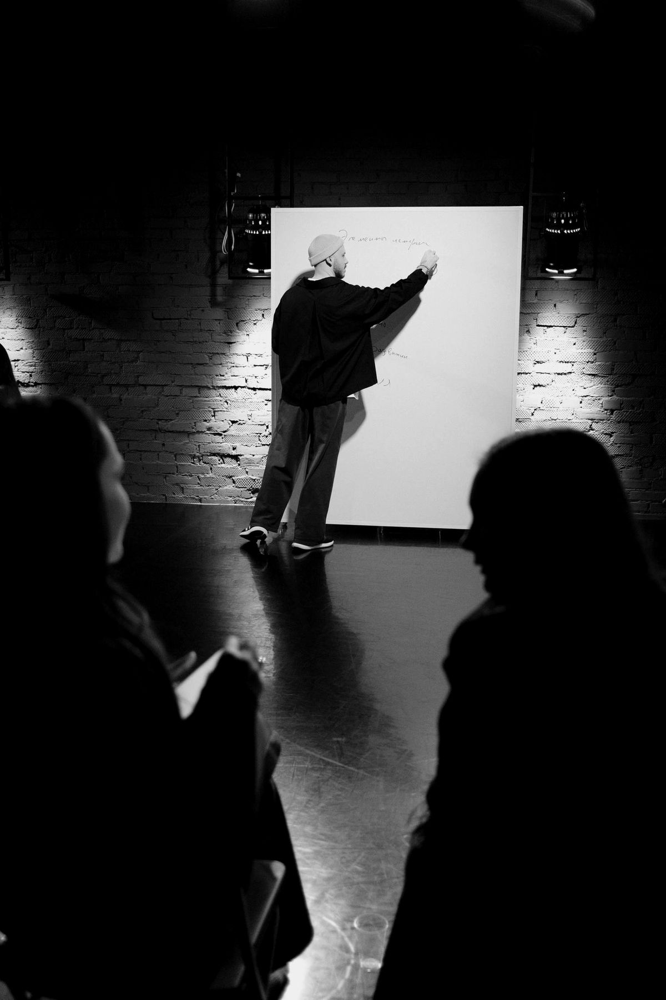
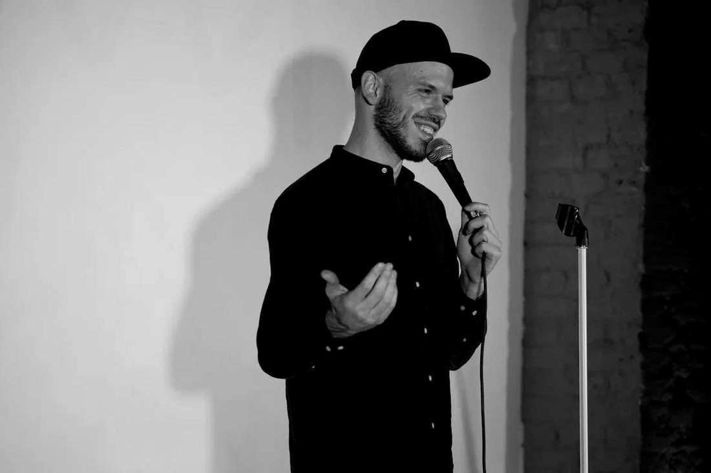
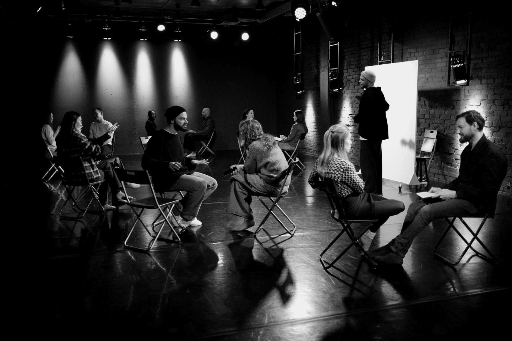

Месяц подготовки к выступлению, которое вас ждёт — будь то отчёт по итогам года, история на корпоративе или поздравление близких. За 4 недели вы создадите убедительную речь и отрепетируете её перед слушателями.

*занятие со Стасом БондаревымВо время выступления почти нет реакций. Вам сложно понять, интересно ли слушателям.
Трудно оторваться от заметок, смотреть на людей и свободно рассказать то, что подготовили.
Каждый раз стараетесь передать слово коллеге или находите причину отказаться от выступления.
Хочется поздравить или поблагодарить людей по-своему, но речь получается слишком общей.
Сложно выбрать главное, связать мысли и уложиться в отведённое время.
Выступать перед людьми можно научиться так же, как водить машину, готовить или говорить по-английски. Для этого нужны практика, понятные инструменты и качественная обратная связь.
выберите свою
Поблагодарить команду так, чтобы люди почувствовали, что их вклад ценят, или рассказать историю, которая вдохновит коллег.
Убедительно представить результаты своей работы или отдела, чтобы ваш вклад заметили и оценили.
Увлечь партнёров своей идеей, чтобы они почувствовали её пользу, поверили в ваши планы и захотели их поддержать.
Подготовить поздравление для семьи или друзей. Рассказать историю, которая рассмешит или растрогает, и дать близким почувствовать, как много они для вас значат.
Готовимся к вашему конкретному выступлению, у которого есть дата, место и люди, чьё мнение вам важно.
Все четыре недели вы работаете со своим материалом: выбираете главную мысль, собираете речь, пробуете её перед группой и дорабатываете со Стасом. К финалу у вас будет подготовленное выступление, которое вы уже отрепетировали и улучшили после обратной связи.
На курсе мы не занимаемся дикцией, постановкой голоса и дыхания. Работаем над тем, что вы хотите сказать, как выстраиваете речь и как подаёте её.
За месяц вы создадите выступление и освоите порядок подготовки, которым сможете пользоваться дальше. Опыт репетиций и понятные приёмы помогут спокойнее подходить к следующим мероприятиям.
Вместе со Стасом дорабатываете содержание и подачу вашей речи с учётом задачи и аудитории.
В мини-группе вы пробуете свой материал, получаете обратную связь и участвуете в обсуждении выступлений других участников.
Теория по теме недели. Смотрите в удобное время и применяете материал к своей речи.
Выполняете задания на материале своего выступления и закрепляете приёмы, которые разобрали на занятиях.
К концу декабря у вас будет выступление, которое вы произнесли перед живыми людьми и доработали после репетиции.
Определяем контекст мероприятия, задачу выступления и главную мысль.
вы понимаете, кому, зачем и что хотите сказать
Выстраиваем начало, которое захватывает внимание, середину, которая его удерживает, и финал, который подталкивает к действию.
у вас есть первая связная версия выступления от начала до конца
Добавляем образы, метафоры, примеры и истории. Создаём яркую подачу, работая с паузами, темпом и акцентами.
ваша речь держит внимание и вызывает эмоции
Прогоняем выступление целиком с учётом условий вашего мероприятия. Осваиваем приёмы управления состоянием и вниманием, учимся поддерживать контакт с аудиторией.
алгоритм настройки подходящего состояния и отрепетированное выступление
одну мысль из десяти, когда у вас две минуты и полный зал
без листа и без страха потерять нить посередине
внимание зала от первой фразы до последней — темпом, паузой, взглядом
так, чтобы слова остались после того, как вы сели
к этому навыку на любом следующем выходе: защите, питче, свадьбе, совете директоров

Тренер по публичным выступлениям и сторителлингу, актёр театра и кино. 7 лет готовит людей к выходу на сцену — и к выходу в жизни.
Актёрское образование и семь лет работы с людьми разных профессий помогли Стасу выстроить собственный подход к подготовке выступлений. Главный принцип: человека не нужно «менять» и «улучшать». Важно помочь ему увлечься темой, раскрыться и передать этот интерес слушателям.
Почти всегда оно есть — просто вы не считали его выступлением: планёрка с итогами, встреча с подрядчиками, тост, родительское собрание, разговор с командой перед январём. На первой личной встрече мы вместе выбираем повод, под который работаем.
Если события действительно нет — мы его назначаем. Повод создаётся так же, как и всё остальное: решением.
За месяц мы не обещаем сделать из вас выдающегося оратора. Но этого времени достаточно, чтобы освоить нужные инструменты, отрепетировать свою речь и выступить значительно увереннее и убедительнее.
Опыт здесь не входной билет. В группе будут и те, кто выступает регулярно, и те, кто выйдет впервые, — и это работает в обе стороны: новичок видит инструменты, опытный впервые слышит честный отклик вместо вежливых аплодисментов.
Нужны повод, желание выступить и готовность работать над этим месяц.
Чтобы на каждом занятии у всех было время на практику и обратную связь.
Даты. 23 ноября — 18 декабря, четыре недели. Выход на вашем событии — в конце декабря, разбор — после.
Расписание. Групповые занятия — вечером, раз в неделю. Личные встречи — по согласованию со Стасом.
Формат. Онлайн, из любого города. Нужны камера, наушники и тихое место.
Группа. Шесть человек. Место фиксируется после разговора со Стасом.
Четыре недели: групповые занятия, личные встречи, подготовка к вашему событию. Набор закрывается, когда занято шестое место.
Полный курс: 5 индивидуальных занятий, 4 групповых занятия, видеоуроки, чат участников и разбор после вашего выхода.

Напишите Стасу — он задаст несколько вопросов про ваше событие и скажет, подходит ли вам этот поток.
телеграм @stassbondarev — ответ лично, без ботов и рассылок. шесть мест.